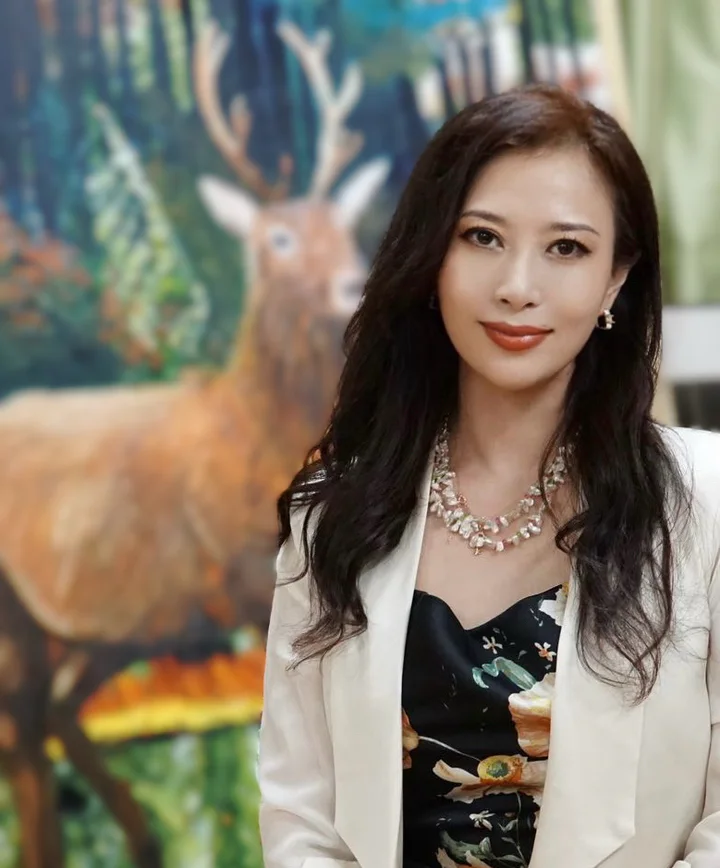

2025
Firewood of Tarim selected for the “Affection for the Tarim River” National Art Exhibition《柴蕴塔里木》入选“情系塔里木”全国美术作品展
Watercolor · Oil Painting · Printmaking水彩 · 油画 · 版画
Soft Origin (柔性本元) is Kaixuan Wang’s current framework for painting: a practice across watercolor, oil painting, and printmaking that studies light, relation, memory, and non-confrontational generation. Soft Her Power marks an earlier stage in this evolving inquiry.
“柔性本元”是王凯萱当前的艺术思想框架。她以水彩、油画与版画为路径，研究光、关系、记忆与非对抗性的生成。“柔性她力量”是这一思想发展过程中的早期阶段。


About关于
Kaixuan Wang is a contemporary Chinese artist working across watercolor, oil painting and printmaking. Her practice explores light, life, regeneration, and the changing relationships between human beings and nature. Through fluid color, layered surfaces and restrained imagery, she examines how life is sustained, transformed and renewed.
王凯萱是一位从事水彩、油画与版画创作的中国当代艺术家。她的实践围绕光、生命、生成，以及人与自然之间不断变化的关系展开。她通过流动的色彩、层叠的表面与克制的图像，探索生命如何被承载、渗透、转化并重新生长。
Portfolio作品
Exhibitions · Awards · Collections · Memberships展览 · 荣誉 · 收藏 · 会员
Firewood of Tarim selected for the “Affection for the Tarim River” National Art Exhibition《柴蕴塔里木》入选“情系塔里木”全国美术作品展
Qianhai Green Curtain received qualification recognition at the Shenzhen International Watercolor Biennial《前海绿幕》获深圳国际水彩画双年展入会资格
Little Bridge and New Homes in a Dong Village received the Shelley Lazarus Watercolor Award at TAG Gallery, Los Angeles《故乡的小桥》《新洞寨新屋》获美国洛杉矶 TAG Gallery Shelley Lazarus Watercolor Award
Three Gorges Hub — Baiyang Port Rail Connection selected for the “New Era, New Journey” National Art Exhibition《三峡枢纽—白洋港陆港铁路建设》入选“新时代·新征程”全国美术作品展
Passion at the Fishing Port received the Materials Award at the NWWS 81st International Open Exhibition《热情渔港》获 NWWS 第81届国际公开年度展 Materials Award
Featured artist profile published in Fine Arts Newspaper《美术报》艺术家专题专版
Research / Philosophy研究 / 理论
Kaixuan Wang's artistic thinking begins with Soft Her Power: a visual philosophy rooted in feminine life experience, tenderness, resilience, and non-confrontational presence. In this system, softness does not mean passivity, surrender, or weakness. It means the capacity to bend without breaking, to hold relation without collapse, and to sustain direction inside complexity.
王凯萱的艺术思想首先形成于“柔性她力量”：一种植根于女性生命经验、温柔、韧性与非对抗性存在的视觉哲学。在这一体系中，“柔性”并不意味着被动、退让或软弱，而是指在压力中弯曲而不折断、在关系中保持结构、在复杂中持续方向的能力。
Through long engagement with watercolor, light, water, color, and time became more than formal elements. They became a way to think about how life continues: through bearing, adjustment, transformation, and generation. This shift gradually expanded Soft Her Power into Soft Origin, or the Force of Generation: a broader philosophy of being in which real strength is not the suppression of difference, but the ability to carry difference, transform conflict, and allow new structures to emerge.
在长期与水彩相处的过程中，水、光、色彩与时间不再只是形式语言，而成为她思考生命如何延续的方式：承载、调节、转化与生成。由此，“柔性她力量”逐渐扩展为“柔性本元”或“生成之力”：一种更广阔的存在哲学。真正的力量不在于压制差异，而在于承载差异、转化冲突，并让新的结构持续生长。
This research connects painting, feminist experience, Eastern philosophy, care ethics, and the lived practice of art education. It gives museums, curators, and collectors a conceptual framework for understanding Kaixuan Wang's work not only as image-making, but as a sustained inquiry into non-confrontational power.
这一研究连接绘画、女性经验、东方哲学、关怀伦理与艺术教育实践。它为博物馆、策展人、画廊与收藏者提供了理解王凯萱作品的思想框架：她的创作不只是图像生产，更是一项关于非对抗性力量的持续研究。
Books / Publications书籍 / 出版
Contact联系